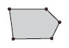
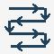

Das Programm Polieren ermöglicht das Polieren mit verschiedenen Bearbeitungsarten. Außerdem kann die Erfassungsmethode für die Geometrie der Platte gewählt werden: durch Erfassen der Punkte, die die Eckpunkte der Oberfläche bestimmen (von drei bis maximal sechs), oder mithilfe einer regelmäßigen Fläche (Rechteck) durch Eingabe der Nullposition und der Werte der beiden Seiten.
/1.1-20250731-080428.png)
Bearbeitungsmodus
Um diese Bearbeitung zu verwenden, muss zunächst einer der beiden verfügbaren Modi über die entsprechende Schaltfläche ausgewählt werden:
Die Modi „
Rechteckauswahl
“ und „
Freie Punktauswahl
“ schließen sich gegenseitig aus: Das Aktivieren eines Modus deaktiviert automatisch den anderen.
 | In den Modus Freie Punktauswahl wechseln |
/1.2-20250303-082732.png) | In den Modus Rechteckauswahl wechseln |
Ein-/Ausfahrmodus
Mit den in der Abbildung gezeigten Schaltflächen kann das Ein- und Ausfahren des Werkzeugs zwischen dem progressiven und dem Standardmodus umgeschaltet werden.
Die Modi „
Progressiv
“ und „
Standard
“ schließen sich gegenseitig aus: Das Aktivieren eines Modus deaktiviert automatisch den anderen.
/2.1_b-20250731-113844.png) | In den progressiven Modus wechseln |
|---|---|
/2.2_b-20250731-113804.png) | In den Standardmodus wechseln |
Modus Freie Punktauswahl
Dieser Modus wird wie folgt angezeigt:
/c-20250731-120333.png)
Parameter
Punktposition
/3.1.1.1-20250731-111822.png) /3.1.1.2-20250731-111843.png) | Set (Einstellen) |
/3.1.1.3_b-20250731-112553.png) | Löschen |
Bearbeitungsarten
/3.1.2.1_b-20250731-114156.png) | Kontur |
 | Horizontale Durchgänge |
/3.1.2.3_b-20250731-114252.png) | Vertikale Durchgänge |
/3.1.2.5_b-20250731-114340.png) | Gesamtwiederholung |
Bearbeitungsparameter
Wiederholungen | Jede Bearbeitungsart kann so oft wiederholt werden, wie in diesem Feld festgelegt. |
Ausgeführt | Zeigt die Anzahl der ausgeführten Wiederholungen an. |
Schritt [mm] | Gibt den Abstand zwischen einem Durchgang und dem nächsten an; er kann für jede Bearbeitungsart ausgewählt werden. |
Werkzeugparameter für das Polieren
/3.2.1_b-20250731-114407.png) | Arbeitsgeschwindigkeit |
/3.2.2_b-20250731-114433.png) | Absenkgeschwindigkeit |
/3.2.3_b-20250731-114455.png) | Werkzeugverschleiß |
Ausführung im Modus Freie Punktauswahl
Zwischen zwei Bearbeitungen führt die Maschine die Bewegungen aus, ohne auf die Sicherheitsposition anzuheben.
Der Bediener legt die Position von mindestens drei bis höchstens sechs verfügbaren Punkten fest, indem er die Maschine manuell bewegt und die entsprechenden Speicherbefehle verwendet. Nach Abschluss der Punktdefinition werden die Bearbeitungsparameter für jede gewünschte Polierart konfiguriert. Gleichzeitig werden auch die spezifischen Parameter des für das Polieren zu verwendenden Werkzeugs eingestellt.
Zu jedem Zeitpunkt vor dem Start des Polierzyklus kann der Bediener den Ein- und Ausfahrmodus des Werkzeugs ändern, indem er eine der beiden verfügbaren Optionen auswählt.
Nach Abschluss der Konfiguration muss die Achse A der Maschine auf 90_ geneigt und die Scheibendrehung gestartet werden. Anschließend kann der Bediener die programmierten Zyklen durch Drücken der Schaltfläche „Zyklus starten“ ausführen. Während der Ausführung kann der Fortschritt über die Spalte „Ausgeführt“ überwacht werden, die die abgeschlossenen Zyklen für jede ausgewählte Polierart anzeigt.
Modus Rechteckauswahl
Dieser Modus wird wie folgt angezeigt:
/d-20250731-120352.png)
Parameter
Rechteckposition
/4.1.1.2-20250731-115103.png) | Rechteckseiten |
|---|
Bearbeitungsparameter
Für die Bearbeitungen Kontur, horizontale/vertikale Durchgänge und Gesamtwiederholung siehe die Bearbeitungsparameter Freie Punktauswahl.
/3.1.2.4_b-20250731-114318.png) | Zickzack |
Werkzeugparameter für das Polieren
Für die Scheibenparameter Arbeitsgeschwindigkeit, Absenkgeschwindigkeit und Scheibenverschleiß siehe Scheibenparameter Freie Punktauswahl.
/3.2.4_b-20250731-114520.png) | Y-Achsenschritt für Zickzack |
Ausführung im Modus Rechteckauswahl
Zwischen zwei Bearbeitungen führt die Maschine die Bewegungen aus, ohne auf die Sicherheitsposition anzuheben.
Der Bediener legt die Position des zu polierenden Rechtecks fest, indem er die Maschine manuell bewegt und die entsprechenden Koordinatenwerte ändert. Nach Abschluss der Rechteckdefinition werden die Bearbeitungsparameter für jede gewünschte Polierart konfiguriert. Gleichzeitig werden auch die spezifischen Parameter des für das Polieren verwendeten Werkzeugs eingestellt.
Zu jedem Zeitpunkt vor dem Start des Polierzyklus kann der Bediener den Ein- und Ausfahrmodus des Werkzeugs ändern, indem er eine der beiden verfügbaren Optionen auswählt.
Nach Abschluss der Konfiguration muss die Achse A der Maschine auf 90_ geneigt und die Scheibendrehung gestartet werden. Anschließend kann der Bediener die programmierten Zyklen durch Drücken der Schaltfläche „Zyklus starten“ ausführen. Während der Ausführung kann der Fortschritt über die Spalte „Ausgeführt“ überwacht werden, die die abgeschlossenen Zyklen für jede ausgewählte Polierart anzeigt.